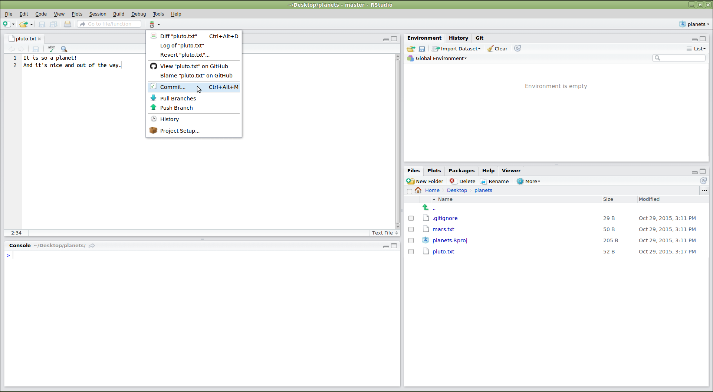
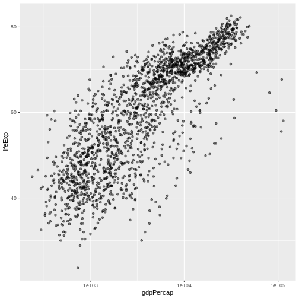
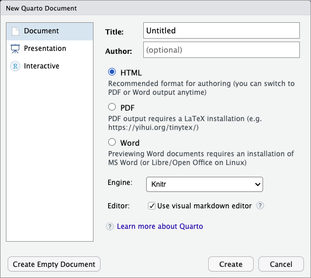

Image 1 of 1: ‘The file system is made up of a root directory that contains sub-directories titled bin, data, users, and tmp’
Figure 2
Image 1 of 1: ‘Like other directories, home directories are sub-directories underneath "/Users" like "/Users/imhotep", "/Users/larry" or"/Users/nelle"’
Figure 3
Image 1 of 1: ‘A directory tree below the Users directory where "/Users" contains the directories "backup" and "thing"; "/Users/backup" contains "original","pnas_final" and "pnas_sub"; "/Users/thing" contains "backup"; and"/Users/thing/backup" contains "2012-12-01", "2013-01-08" and"2013-01-27"’
Figure 4
Image 1 of 1: ‘A directory tree below the Users directory where "/Users" contains the directories "backup" and "thing"; "/Users/backup" contains "original","pnas_final" and "pnas_sub"; "/Users/thing" contains "backup"; and"/Users/thing/backup" contains "2012-12-01", "2013-01-08" and"2013-01-27"’
Image 1 of 1: ‘Comic: a PhD student sends "FINAL.doc" to their supervisor, but after several increasingly intense and frustrating rounds of comments and revisions they end up with a file named "FINAL_rev.22.comments49.corrections.10.#@$%WHYDIDCOMETOGRADSCHOOL????.doc"’
Image 1 of 1: ‘A diagram demonstrating how a single document grows as the result of sequential changes’
Figure 3
Image 1 of 1: ‘A diagram with one source document that has been modified in two different ways to produce two different versions of the document’
Figure 4
Image 1 of 1: ‘A diagram that shows the merging of two different document versions into one document that contains all of the changes from both versions’
Image 1 of 1: ‘A diagram showing how "git add" registers changes in the staging area, while "git commit" moves changes from the staging area to the repository’
Figure 2
Image 1 of 1: ‘A diagram showing two documents being separately staged using git add, before being combined into one commit using git commit’
Image 1 of 1: ‘A diagram showing how git restore can be used to restore the previous version of two files’
Figure 2
Image 1 of 1: ‘A diagram showing the entire git workflow: local changes are staged using git add, applied to the local repository using git commit, and can be restored from the repository using git checkout’
Image 1 of 1: ‘RStudio screenshot showing the file menu dropdown with "New Project..." selected’
Figure 2
Image 1 of 1: ‘RStudio screenshot showing New Project dialog window with "Create project from existing directory" selected’
Figure 3
Image 1 of 1: ‘RStudio window showing the "Create Project From Existing Directory" dialog. In the dialog, the project working directory has been set to "~/Desktop/planets"’
Figure 4
Image 1 of 1: ‘RStudio window after new project is created with large arrow pointing to vertical Git menu bar.’
Figure 5
Image 1 of 1: ‘RStudio window demonstrating the use of the editor panel to modify the "pluto.txt" file’
Figure 6
Image 1 of 1: ‘RStudio screenshot showing the Git menu dropdown with the "Commit..." option selected’

Figure 7
Image 1 of 1: ‘RStudio screenshow showing the "Review Changes" dialog. The top left panel shows the list of files that can be included or excluded from the commit. The top right panel is for writing a commit message. The bottom panel shows information about the currently selected file in the top left panel.’
Figure 8
Image 1 of 1: ‘RStudio screenshot showing the git menu dropdown with the "History" option selected’
Figure 9
Image 1 of 1: ‘RStudio screenshot showing the "Review Changes" dialog after pressing the "History" button. The top panel lists the commits in the repository, similar to git log. The bottom panel shows the changes included in the commit that has been selected in the top panel.’
Figure 10
Image 1 of 1: ‘RStudio screenshot showing .gitignore open in the editor pane with the files .Rproj.user, .Rhistory, .RData, and *.Rproj added to the end’
Image 1 of 1: ‘Blank plot, before adding any mapping aesthetics to ggplot().’
Figure 2
Image 1 of 1: ‘Plotting area with axes for a scatter plot of life expectancy vs GDP, with no data points visible.’
Figure 3
Image 1 of 1: ‘Scatter plot of life expectancy vs GDP per capita, now showing the data points.’
Figure 4
Image 1 of 1: ‘Binned scatterplot of life expectancy versus year showing how life expectancy has increased over time’
Binned scatterplot of life expectancy versus year showing how life
expectancy has increased over time
Figure 5
Image 1 of 1: ‘Binned scatterplot of life expectancy vs year with color-coded continents showing value of 'aes' function’
Binned scatterplot of life expectancy vs year with color-coded
continents showing value of ‘aes’ function
Figure 6
Figure 7
Figure 8
Figure 9
Figure 10
Image 1 of 1: ‘Scatter plot of life expectancy vs GDP per capita with a trend line summarising the relationship between variables. The plot illustrates the possibilities for styling visualisations in ggplot2 with data points enlarged, coloured orange, and displayed without transparency.’
Figure 11
Figure 12
Image 1 of 1: ‘Scatterplot of GDP vs life expectancy showing logarithmic x-axis data spread’

Scatterplot of GDP vs life expectancy showing logarithmic x-axis data
spread
Figure 13
Image 1 of 1: ‘Scatter plot of life expectancy vs GDP per capita with a blue trend line summarising the relationship between variables, and gray shaded area indicating 95% confidence intervals for that trend line.’
Figure 14
Image 1 of 1: ‘Scatter plot of life expectancy vs GDP per capita with a trend line summarising the relationship between variables. The blue trend line is slightly thicker than in the previous figure.’
Figure 15
Image 1 of 1: ‘Scatter plot of life expectancy vs GDP per capita with a trend line summarising the relationship between variables. The plot illustrates the possibilities for styling visualisations in ggplot2 with data points enlarged, coloured orange, and displayed without transparency.’
Image 1 of 1: ‘The first step in creating a repository on GitHub: clicking the "create new" button’
Figure 2
Image 1 of 1: ‘The second step in creating a repository on GitHub: filling out the new repository form to provide the repository name, and specify that neither a readme nor a license should be created’
Figure 3
Image 1 of 1: ‘The summary page displayed by GitHub after a new repository has been created. It contains instructions for configuring the new GitHub repository as a git remote’
Figure 4
Image 1 of 1: ‘A diagram showing how "git add" registers changes in the staging area, while "git commit" moves changes from the staging area to the repository’
Figure 5
Image 1 of 1: ‘A diagram illustrating how the GitHub "planets" repository is also a git repository like our local repository, but that it is currently empty’
Figure 6
Image 1 of 1: ‘Clicking the "Copy to Clipboard" button on GitHub to obtain the repository's URL’
Figure 7
Image 1 of 1: ‘A screenshot showing that clicking on "SSH" will make GitHub provide the SSH URL for a repository instead of the HTTPS URL’
Figure 8
Image 1 of 1: ‘A diagram showing how "git push origin" will push changes from the local repository to the remote, making the remote repository an exact copy of the local repository.’
Image 1 of 1: ‘A screenshot of the GitHub Collaborators settings page, which is accessed by clicking "Settings" then "Collaborators"’
Figure 2
Image 1 of 1: ‘A diagram showing that "git clone" can create a copy of a remote GitHub repository, allowing a second person to create their own local repository that they can make changes to.’
Image 1 of 1: ‘Screenshot of the New Quarto Document dialogue box in RStudio’

Figure 2
Image 1 of 1: ‘Schematic of the Quarto rendering process’
Figure 3
Image 1 of 1: ‘Icon for turning on and off the visual editing mode in RStudio, which looks like a pair of compasses’
RStudio versions 1.4 and later include visual markdown editing mode.
In visual editing mode, markdown expressions (like
**bold words**) are transformed to the formatted appearance
(bold words) as you type. This mode also includes a
toolbar at the top with basic formatting buttons, similar to what you
might see in common word processing software programs. You can turn
visual editing on and off by pressing the
button in the top right corner of your R Markdown document.


 If we want to remove one column only from the
If we want to remove one column only from the 


 We can also look at where the specimens were processed:
We can also look at where the specimens were processed: